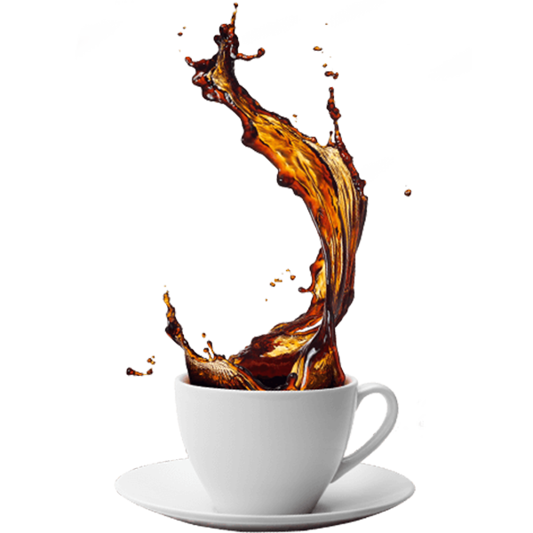

The coffee
Find a flavour profile that feels like you, from chocolatey and mellow to bold and clean.

The everyday ritual, reimagined.KOPPEE brings the warmth of a neighbourhood café into a modern digital experience. This student project explores how a thoughtful website can help people discover a menu and plan a visit.
We kept the original coffee identity and gave it a calmer, more expressive direction: warm colours, generous space and useful interactions.
Explore the experience ↗A concept built around three small pleasures.
Find a flavour profile that feels like you, from chocolatey and mellow to bold and clean.

Make space for a slower morning or an afternoon reset.

Bring a friend, open a book or enjoy a moment to yourself.